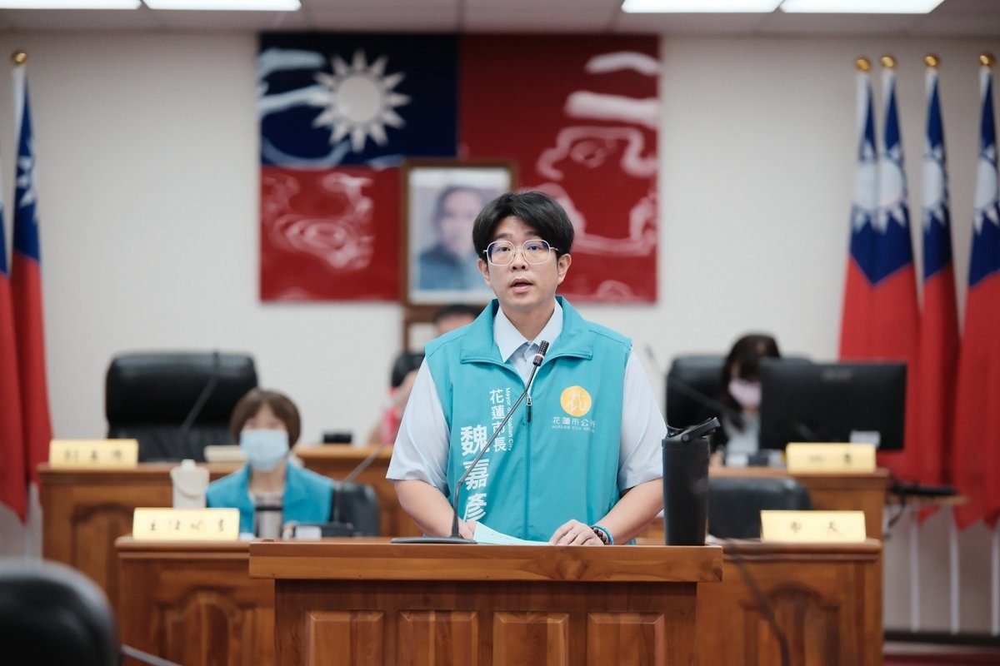

從災後重建到產業振興 魏嘉彥施政報告聚焦花蓮城市發展

可樂電子報小編/編輯
花蓮市民代表會第22屆第8次定期大會今（2）日開議，市長魏嘉彥率領市政團隊提出本屆任期最後一次施政報告，從基礎建設、防災整備、社會照顧到觀光產業，說明市政推動成果與未來方向。他表示，歷經0403強震、颱風豪雨及觀光產業衝擊，花蓮面對的課題，除了修復受損設施，更包括如何穩定市民生活、協助業者重拾經營信心，讓城市在重建過程中持續向前。

魏嘉彥指出，公所持續以「穩定生活、重建家園、振興經濟」為施政核心，一方面落實道路、排水及公共設施改善，另一方面透過社福服務、親子教育與文化活動，照顧不同年齡及需求的市民。他也感謝主席楊哲灃、副主席黃達祥及全體市民代表，四年來在預算審議、民意反映與市政監督上的支持，讓各項工作得以逐步推進。

在基礎建設方面，市公所今年透過道路整平及重要路段養護工程，已改善路面逾2萬平方公尺，並持續辦理坑洞修補、溝蓋更新、標誌標線與路燈維護。國聯一、二路人行道改善、菁華橋震災復建、主和裡活動中心耐震補強，以及中山、中原地下道抽水系統改善等工程均已結案。魏嘉彥表示，這些工程與市民每天的通行及生活安全密切相關，公所將依道路現況與地方需求，持續盤點、分批改善。

「花蓮高商校園周邊步道暨道路安全改善計畫」及「花蓮市中原路人行道改善工程」，今年分別獲內政部國土管理署「2026馬路好行」評選工程案件優良及佳作肯定。魏嘉彥說，透過人行道優化、路口動線調整、行人庇護及無障礙設施改善，提升學生通學及市民步行安全。未來也將持續以長者、兒童、身心障礙者及推嬰兒車家庭的需求，作為公共通行空間規劃的重要考量。

花蓮市今年8月開放的大本交通主題公園，結合模擬道路、交通號誌及標線，讓孩子透過遊戲學習交通規則；貓頭鷹親子公園完成遊戲鋪面及圍牆翻修。市立圖書館辦理兒童嘉年華，兩天吸引逾4000人次參與，透過表演、闖關及互動體驗，增加家庭共同學習與陪伴的機會。

針對地方產業復甦，魏嘉彥指出，觀光振興需要長期投入，公所透過音樂、體育及特色市集吸引旅客，也持續思考如何讓參與人潮轉化為住宿、餐飲及商圈消費。8月「山海迴響．花蓮聲浪」演唱會累計吸引約1萬5000人次，其中約6000人次來自外地，估計帶動逾2500萬元觀光經濟效益；9月太平洋縱谷半程馬拉松連同眷屬吸引逾1萬人參與，估計帶動約1800萬元經濟效益，並透過日本、韓國友好城市跑者參與，深化城市交流。
10月的兩場音樂活動各有特色，雙十節這一天「山海留聲．與民同歌」演唱會在中正體育館登場，讓不同世代的聽眾重溫經典民歌。當月17、18日的原客嘉年華則把舞台搬到中山公園，原住民族與客家歌手接力演出，園內集結47攤特色市集，讓市民與遊客聽見花蓮的母語歌聲，也能品嚐原客風味。
除了活動行銷，市公所也攜手國立故宮博物院推動「故宮相伴．洄瀾有禮」聯名專案，由7家在地品牌推出25項商品，涵蓋特色食品、醬料、居家擺設及臺灣檜木精油等品項。透過故宮典藏元素與花蓮物產、設計結合，協助業者提升產品辨識度與文化內涵，並結合城市活動宣傳，拓展接觸消費者的機會。後續將持續爭取合作，串聯店家、旅宿與旅遊服務據點，讓地方品牌獲得更多曝光及通路資源。
魏嘉彥強調，市政建設需要持續累積，從一條道路、一處排水溝，到一座公園、一個社區照顧據點，最終都要回到市民生活是否更加安全、便利。市政團隊將持續落實各項工程與服務，兼顧災害整備、家庭照顧、文化傳承及產業發展，與代表會共同為花蓮奠定更穩健的發展基礎。
📸 更多現場紀實影像


🌟 掌握花蓮在地第一手資訊・歡迎訂閱追蹤
深度紀實報導、在地精采影音專題，第一時間接收最新消息！